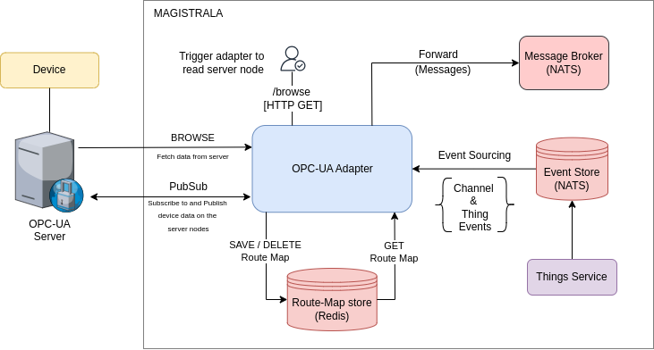

OPC-UA#
OPC Unified Architecture (OPC-UA) is a communication protocol and framework that is widely used in industrial automation and the Industrial Internet of Things (IIoT). It provides a standard platform for connecting industrial devices and systems, allowing them to share data and information seamlessly. Data from the devices is sent to the OPC-UA Server where a client can consume it.
Bridging with an OPC-UA Server can be done over the opcua-adapter, which is typically an OPC-UA client built on top of magistrala. This service sits between Magistrala and an OPC-UA Server and consumes/sends messages to and from the OPC-UA server.
Run OPC-UA Server#
The OPC-UA Server is used for connectivity layer. It allows various methods to read information from the OPC-UA server and its nodes. The current version of the opcua-adapter only supports Browse and Subscribe methods, which are typically used to perform singular browse commands to get data from the OPC-UA server, or continuous subscriptions to data on the nodes. Public OPC-UA test servers are available for testing of OPC-UA clients and can be used for development and test purposes. Open62541 is recommended if you would like to build a simple custom server or to use some of their pre-built servers.
To get data from a custom device to magistrala's OPC-UA adapter, the server has to be configured and the node id of the device has to be known. The node id is a unique identifier of the device's data point. The node id is used to subscribe to the data point and to get the data from the specific device. Additionally, the server URI is needed to connect to the specified server. The server URI is the address of the OPC-UA server, and has a prefix of opc.tcp:// followed by the server's IP address and port number.
Magistrala OPC-UA Adapter#
Execute the following command from Magistrala project root to run the opcua-adapter:
docker-compose -f docker/addons/opcua-adapter/docker-compose.yml up -d
The OPC-UA adapter can connect to multiple OPC-UA servers and subscribe to multiple nodes on each server, as long as the unique node-id of the device is provided along with the server URI.
Architecture#
|  |
|---|
| Figure 1 - OPC-UA Adapter Architecture |
Magistrala's OPC-UA adapter is a custom built OPC-UA client that can perform Browse and Subscribe operations on an OPC-UA server. Browse operations are used to get instantaneous data from a node within the server. Once data is acquired, it is forwarded to the NATS message broker. Additionally, the OPC-UA adapter exposes a \browse HTTP endpoint that users in magistrala can use to trigger the adapter to perform Browse commands on an OPC-UA server, whose configuration is passed as part of the query.
The adapter sources thing and channel events from the events store and uses these to create route-maps between Magistrala and the OPC-UA server. The route-map is important as it maps the OPC-UA server details and devices to the things and channels on magistrala. Once route-maps are successfully created and stored in the Redis database, the adapter can subscribe to the OPC-UA server and forward the messages to the NATS message broker. Subscriptions are maintained in the Redis DB and are updated when new events are sourced from the things service.
Route Map#
The opcua-adapter uses Redis database to create a route-map between Magistrala and an OPC-UA Server. As Magistrala uses Things and Channels IDs to sign messages, OPC-UA uses node ID (node namespace and node identifier combination) and server URI. The adapter route-map associates a Thing ID with a Node ID and a Channel ID with a Server URI.
Note: Magistrala OPC-UA adapter parses the node ID in a string format, which may not work with all OPC-UA servers. The node ID should be in the format of ns=0;i=84 where ns is the namespace and i is the identifier. If your OPC-UA server uses a different format, you may need to modify the adapter to parse the node ID correctly. This can be done by modifying the query parameters of the browse request, specifically the value identifierType.
The opcua-adapter uses the metadata of provision events emitted by Magistrala system to update its route map. For that, you must provision Magistrala Channels and Things with an extra metadata key in the JSON Body of the HTTP request. It must be a JSON object with key opcua whose value is another JSON object. This nested JSON object should contain node_id or server_uri that corresponds to an existent OPC-UA Node ID or Server URI:
Channel structure:
The created channel should have metadata containing the OPC-UA server URI from which data should be fetched. Once a channel is created, the adapter automatically creates the channel route map and stores it in the Redis DB.
{
"name": "<channel name>",
"metadata:": {
"opcua": {
"server_uri": "<Server URI>"
}
}
}
Thing structure:
Similar to a channel, when a thing is created, metadata should be created and it should contain the node ID of the specific device that will send data to the server. This is also stored in the Redis DB as a route map.
{
"name": "<thing name>",
"metadata:": {
"opcua": {
"node_id": "<Node ID>"
}
}
}
Subscribe#
To create an OPC-UA subscription, the user should connect the Thing to the Channel. This triggers an event through the event store which in turn causes the adapter to automatically create the connection, enable the redis route-map and run a subscription to the server_uri and node_id defined in the Thing and Channel metadata.
The subscription details are stored locally and will be maintained until the Thing or Channel is deleted, or the channel <-> thing connection is disabled. The adapter will also listen for any changes in the Thing and Channel metadata and update the subscription accordingly. Once data is available from the OPC-UA server, it is published to the OPC-UA adapter which then forwards it to the NATS message broker.
Browse#
The opcua-adapter exposes a /browse HTTP endpoint accessible with method GET and configurable throw HTTP query parameters server, namespace, identifier, and identifierType. The server URI, the node namespace and the node identifier represent the parent node and are used to fetch the list of available children nodes starting from the given one. By default the root node ID (node namespace and node identifier combination) of an OPC-UA server is ns=0;i=84. It's also the default value used by the opcua-adapter to do the browsing if only the server URI is specified in the HTTP query.
Note: Since different OPC-UA servers use different types of node IDs, the identifierType parameter is used to specify the type of the node identifier. The default value is string which is used to parse the node ID in the format of ns=0;i=84. If the node ID is in a different format, the identifierType parameter should be set to the appropriate value .
Sample request:
curl -X GET "http://magistrala-opcua:8188/browse?server=opc.tcp://192.168.1.12:4840&namespace=1&identifier=myUintValue&identifierType=string"
Expected response:
{
"nodes":[
{
"NodeID":"ns=1;s=myUintValue",
"DataType":"uint32",
"Description":"myUintValue",
"Unit":"",
"Scale":"",
"BrowseName":"myUintValue"
}
]
}
Messaging#
To forward OPC-UA messages the opcua-adapter subscribes to the Node ID of an OPC-UA Server URI. It verifies the server_uri and the node_id of received messages. If the mapping exists it uses corresponding Channel ID and Thing ID to sign and forwards the content of the OPC-UA message to the Magistrala message broker. If the mapping or the connection between the Thing and the Channel don't exist the subscription stops.
Sample Use Case#
The OPC-UA adapter can be used in an industrial setup to monitor process values from the different industrial devices and machines. The industrial devices which are controlled by controllers such as PLCs (Programmable Logic Controllers) send data to the OPC-UA server over TCP/IP, with each device containing a specific node ID.
Things on magistrala can be created to represent these devices and the channels can be created to represent the data points on the devices. The OPC-UA adapter can then be used to subscribe to the OPC-UA server and forward the data to the NATS message broker. This data can then be consumed by other services in the Magistrala system, and further processing done if need be.